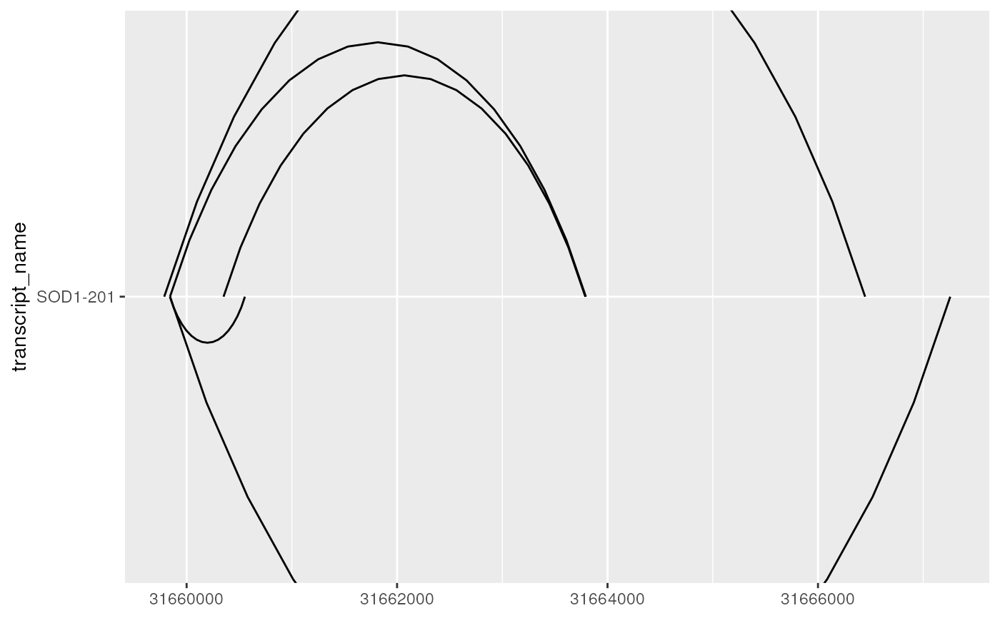
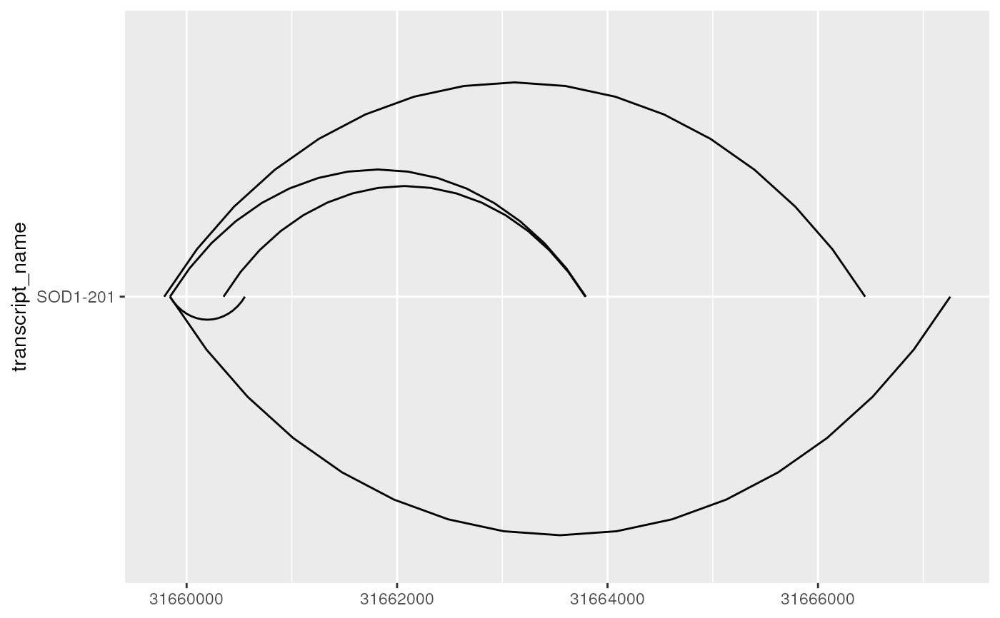

geom_junction() draws curves that are designed to represent junction reads
from RNA-sequencing data. The curves can be modified using curvature,
angle and ncp parameters. By default, the junctions will alternate
between being plotted on the top and bottom of each y group, however this
can be changed via junction.orientation.
geom_junction(
mapping = NULL,
data = NULL,
stat = "identity",
position = "identity",
...,
junction.orientation = "alternating",
curvature = 0.5,
angle = 90,
ncp = 5,
arrow = NULL,
arrow.fill = NULL,
lineend = "butt",
na.rm = FALSE,
show.legend = NA,
inherit.aes = TRUE
)Arguments
- mapping
Set of aesthetic mappings created by
aes()oraes_(). If specified andinherit.aes = TRUE(the default), it is combined with the default mapping at the top level of the plot. You must supplymappingif there is no plot mapping.- data
The data to be displayed in this layer. There are three options:
If
NULL, the default, the data is inherited from the plot data as specified in the call toggplot().A
data.frame, or other object, will override the plot data. All objects will be fortified to produce a data frame. Seefortify()for which variables will be created.A
functionwill be called with a single argument, the plot data. The return value must be adata.frame, and will be used as the layer data. Afunctioncan be created from aformula(e.g.~ head(.x, 10)).- stat
The statistical transformation to use on the data for this layer, as a string.
- position
Position adjustment, either as a string, or the result of a call to a position adjustment function.
- ...
Other arguments passed on to
layer(). These are often aesthetics, used to set an aesthetic to a fixed value, likecolour = "red"orsize = 3. They may also be parameters to the paired geom/stat.- junction.orientation
characterone of "alternating", "top" or "bottom". Specifies where the junctions will be plotted with respect to eachygroup.- curvature
A numeric value giving the amount of curvature. Negative values produce left-hand curves, positive values produce right-hand curves, and zero produces a straight line.
- angle
A numeric value between 0 and 180, giving an amount to skew the control points of the curve. Values less than 90 skew the curve towards the start point and values greater than 90 skew the curve towards the end point.
- ncp
The number of control points used to draw the curve. More control points creates a smoother curve.
- arrow
specification for arrow heads, as created by arrow().
- arrow.fill
fill colour to use for the arrow head (if closed).
NULLmeans usecolouraesthetic.- lineend
Line end style (round, butt, square).
- na.rm
If
FALSE, the default, missing values are removed with a warning. IfTRUE, missing values are silently removed.- show.legend
logical. Should this layer be included in the legends?
NA, the default, includes if any aesthetics are mapped.FALSEnever includes, andTRUEalways includes. It can also be a named logical vector to finely select the aesthetics to display.- inherit.aes
If
FALSE, overrides the default aesthetics, rather than combining with them. This is most useful for helper functions that define both data and aesthetics and shouldn't inherit behaviour from the default plot specification, e.g.borders().
Examples
library(magrittr)
example_introns <-
gba_ens_105 %>%
dplyr::filter(type == "exon") %>%
to_intron(group_var = transcript_name)
example_introns
#> # A tibble: 77 × 8
#> seqnames strand type gene_name transcript_name transcript_biotype start
#> <fct> <fct> <chr> <chr> <chr> <chr> <dbl>
#> 1 1 - intron GBA GBA-202 protein_coding 1.55e8
#> 2 1 - intron GBA GBA-201 protein_coding 1.55e8
#> 3 1 - intron GBA GBA-203 protein_coding 1.55e8
#> 4 1 - intron GBA GBA-204 protein_coding 1.55e8
#> 5 1 - intron GBA GBA-211 processed_transcript 1.55e8
#> 6 1 - intron GBA GBA-210 processed_transcript 1.55e8
#> 7 1 - intron GBA GBA-206 processed_transcript 1.55e8
#> 8 1 - intron GBA GBA-202 protein_coding 1.55e8
#> 9 1 - intron GBA GBA-201 protein_coding 1.55e8
#> 10 1 - intron GBA GBA-203 protein_coding 1.55e8
#> # … with 67 more rows, and 1 more variable: end <dbl>
base <- example_introns %>%
dplyr::filter(transcript_name == "GBA-202") %>%
ggplot2::ggplot(ggplot2::aes(
xstart = start,
xend = end,
y = transcript_name
))
base + geom_junction()

base + geom_junction(junction.orientation = "top")

base + geom_junction(junction.orientation = "bottom")
 # for multiple transcripts, sometimes the junctions will overlap
base_multi_transcript <- example_introns %>%
ggplot2::ggplot(ggplot2::aes(
xstart = start,
xend = end,
y = transcript_name
))
base_multi_transcript + geom_junction()
# this can be corrected using the curvature parameter
base_multi_transcript + geom_junction(curvature = 0.25)
# for multiple transcripts, sometimes the junctions will overlap
base_multi_transcript <- example_introns %>%
ggplot2::ggplot(ggplot2::aes(
xstart = start,
xend = end,
y = transcript_name
))
base_multi_transcript + geom_junction()
# this can be corrected using the curvature parameter
base_multi_transcript + geom_junction(curvature = 0.25)
 base_multi_transcript + geom_junction(
ggplot2::aes(colour = transcript_name),
curvature = 0.25
)
base_multi_transcript + geom_junction(
ggplot2::aes(colour = transcript_name),
curvature = 0.25
)